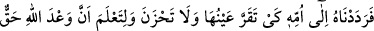
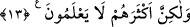

tutun da çocuğun kim olduğunu size söylesin.” Bunun üzerine o dedi ki: “Ben, (bu
sözümle) o âilenin Melik’e (Firavun’a) karşı samîmî olduklarını kasdettim.” Yâni o,
Hâmân’ın elinden kurtulabilmek için, sözünde kullandığı “ona” zamîri’nin çocuğa değil,
Firavun’a râcî olduğunu ifâde etmek durumunda kaldı. Bunun üzerine Hâmân: “Bırakın,
doğru söyledi” dedi. Firavun ona, çocuğu bakacak âileyi getirmesini emretti. Annesi
getirildiğinde Mûsâ Firavun’un elinde ağlıyor, o da onu oyalıyordu. Ya da Mûsâ,
Âsiye’nin elindeydi; (Firavun onu alıp) annesine verdi. Mûsâ, annesinin kokusunu
duyunca onunla ünsiyet kurdu ve memesini ağzına aldı.
Senin güzel kokunu sabâ rüzgârından hisseden
Tanıdık dosttan, âşinâ sözler işitir
Firavun Mûsâ’nın annesine: “Sen çocuğun neyisin? Çünkü bu, senin memen dışında
bütün memeleri reddetti” dedi. O da: “Ben, hoş kokulu ve güzel sütlü bir kadınım. Bana
getirilen her çocuk beni kabul etmiştir” diye cevap verdi. Bunun üzerine Firavun,
çocuğu ona verip: “Haftada bir gün bizim yanımıza getir” dedi ve arkasından ücretini de
yolladı. Mûsâ’nın annesi o gün sevinerek çocuğu evine götürdü. Firavun’un yakınları
hergün, bakım ücreti olarak bir dinar gönderiyordu. Annesi de bunu alıyordu. Çünkü bu
para hakikatta emzirme ücreti olmayıp bir harbînin malı gibi idi. Nitekim Fethu’r-
Rahman’da bu şekilde kaydedilmiştir.
Fakir (Bursevî) der ki: Mûsâ’nın annesi, gerçekte emzirme ücretine mustahak olmaz;
ancak Mûsâ’nın Firavun’un oğlu olması yönüyle ücret alması câizdir. Ancak şu kadar
var ki, bu, ücrete değil sılaya hamledilir. Çünkü o, (görünürde) ücret verirse bu işi
üstleniyordu. Ve yine bilindiği gibi bu ücret konusunun, şerîatlara göre değişiklik
arzeden bir husus olması da muhtemeldir.
Keşfü’l-esrâr’da der ki: “Annesinin Mûsâ’yı denize bırakıp tekrar geri alması
arasında geçen süre, bir çocuğun anneden ayrı kalabileceği bir zaman kadardır.” Sekiz
gece beklediğini ve hiç meme kabul etmediğini söyleyenin bu görüşü uzak bir
ihtimaldir.
13. Böylelikle biz onu, anasına, gözü aydın olsun, gam çekmesin ve Allah’ın
vâdinin gerçek olduğunu bilsin diye geri verdik. Fakat yine de pek çoğu (bunu)
bilmezler.
“Böylelikle biz onu”, yâni Mûsâyı “anasına”, çocuğuna kavuşmakla “gözü aydın
olsun, gam çekmesin ve Allah’ın” onu geri verme ve mürsel peygamberlerden kılma